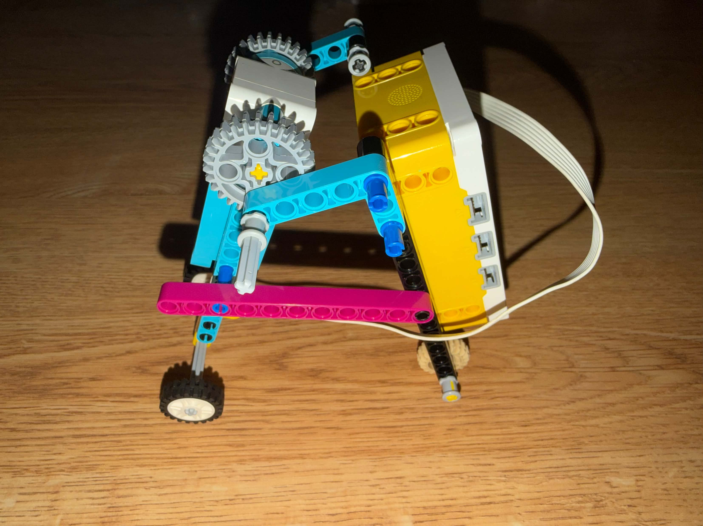

My creation was inspired by nature, specifically the way inchworms move through coordinated body contractions and extensions to push forward.
I used that natural motion as the basis for my design, focusing on the pushing action that allows the device to move across a surface.
Video of Device in Motion